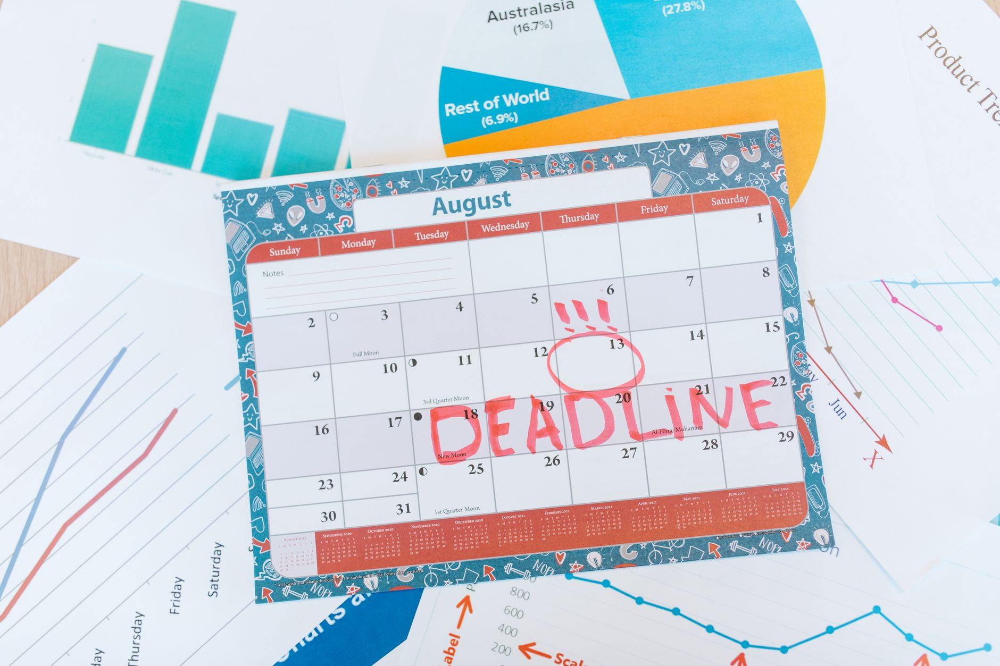

Are you a small business owner struggling to juggle appointments, calls, and client meetings? Do you find yourself spending hours each week scheduling, leading to missed opportunities and frustrated clients? You’re not alone. Many small businesses face this challenge. Thankfully, artificial intelligence (AI) scheduling tools are emerging as powerful solutions, offering a way to simplify operations and boost productivity. This guide will explore how these tools can transform your scheduling process, saving you time and ultimately, enhancing your business’s success.

What to Know About AI Scheduling
AI scheduling tools aren’t simply sophisticated digital calendars. They represent a fundamental shift in how businesses manage client interactions. At their core, these tools use artificial intelligence algorithms to learn your business’s specific needs and automate a significant portion of the scheduling workflow. They move beyond a static display of availability, intelligently matching your available time slots with client requests, sending proactive automated reminders, and even handling rescheduling requests with minimal manual intervention. This intelligent automation translates to tangible benefits: reduced back-and-forth communication, a significant decrease in no-show rates, and, crucially, more time dedicated to core business activities. The fundamental promise of AI scheduling is increased efficiency and a more streamlined operational flow.
How AI Scheduling Tools Work: A Detailed Breakdown
The functionality of AI scheduling tools is built upon a series of interconnected processes. Here’s a detailed look at how they typically operate:

- Integration: Most AI scheduling tools prioritize smooth integration with existing business systems. This typically includes direct connections to popular calendar platforms like Google Calendar and Microsoft Outlook, ensuring that your schedule remains synchronized across all channels. Also, integration with communication channels such as email and SMS is standard, facilitating automated notifications and updates.
- Client Portal Creation: A critical component is the creation of a dedicated client portal. This is a secure online space where clients can easily view your availability, select preferred appointment times, and book appointments without requiring direct contact with you. The portal’s design and user experience are key to adoption and satisfaction.
- Automated Booking Logic: Once a client accesses the portal, the AI tool’s core function kicks in. It analyzes your defined availability - considering factors like working hours, buffer times between appointments, and pre-booked blocks - and presents a list of suitable time slots. The system then intelligently matches client requests to these available slots, proposing options that work for both parties.
- Confirmation & Automated Reminders: Upon a client’s selection of an appointment time, the tool automatically confirms the booking and sends a confirmation email and/or SMS message. Crucially, it also initiates a series of automated reminders leading up to the appointment, reducing the likelihood of last-minute cancellations.
- Rescheduling Management: Life happens. AI scheduling tools handle rescheduling requests efficiently. When a client needs to modify their appointment, the system checks your availability and proposes alternative times, notifying both the client and yourself of the new arrangement.
- Customization Options: Many tools allow for customization of appointment types, durations, and even specific service offerings, providing a tailored experience for your business.
Types of AI Scheduling Tools for Small Businesses: A Comparative Look
The market offers a diverse range of AI scheduling tools, each with its strengths and weaknesses. Here’s a look at some popular options catering specifically to small businesses:
- Calendly: Arguably the most well-known, Calendly is celebrated for its user-friendly interface and extensive integrations. It’s a solid starting point for many businesses looking for a straightforward solution. Its free plan offers basic functionality, while paid plans unlock more advanced features.
- Doodle: Particularly well-suited for group scheduling and finding mutually available times, Doodle excels when coordinating meetings with multiple participants. It simplifies the process of finding a time that works for everyone involved.
- Acuity Scheduling: Offering a more reliable feature set, Acuity Scheduling goes beyond basic scheduling by incorporating payment processing capabilities and automated email sequences for appointment reminders and follow-ups. This can simplify billing and improve client communication.
- Setmore: Positioned as a more affordable option, Setmore provides a clean and intuitive interface with good integration capabilities. It’s a compelling choice for businesses seeking a cost-effective solution without sacrificing functionality.
The optimal tool for your business will depend on your specific needs, budget, and the complexity of your scheduling requirements.
Benefits of Using AI Scheduling Tools: Quantifiable Advantages
Implementing an AI scheduling tool isn’t just about convenience; it delivers tangible benefits that can positively impact your business’s bottom line. For more on this, see AI for Customer Service in a Small Business: How to Set It Up.
- Time Savings: Automating scheduling tasks is a significant time saver. Studies consistently show that small business owners spend an average of 10 to 20 hours per week on administrative tasks, including scheduling. By automating this process, you can reclaim valuable time to focus on revenue-generating activities.
- Reduced No-Shows: One of the most immediate benefits is a reduction in no-show rates. Automated reminders significantly decrease the likelihood of clients forgetting or canceling appointments.
- Improved Client Experience: Clients appreciate the convenience of booking appointments online at their own pace, eliminating the need for phone calls or emails to request availability.
- Increased Revenue: By streamlining the booking process and minimizing no-shows, you can increase the number of appointments you successfully book, directly contributing to revenue growth.
- Better Organization: AI scheduling tools provide a centralized, digital overview of your schedule, simplifying time management and resource allocation.
- Enhanced Team Productivity: When scheduling is automated, your team can focus on providing excellent client service rather than managing calendars and coordinating appointments.
Getting Started: A Step-by-Step Guide to Implementation
Successfully implementing an AI scheduling tool requires a strategic approach. Here’s a step-by-step guide to ensure a smooth transition: For more on this, see How To Use AI To Create Social Media Content Faster.
- Choose a Tool: Research and compare different AI scheduling tools, considering factors such as pricing, integrations, ease of use, and customer support.
- Connect Your Calendar: Integrate the chosen tool with your existing calendar platform (Google Calendar, Outlook, etc.). This ensures that your schedule remains synchronized and accurate.
- Create a Client Portal: Set up a dedicated client portal where clients can easily view your availability and book appointments.
- Customize Your Settings: Configure your scheduling tool’s settings to align with your business’s specific needs, including appointment duration, buffer times, cancellation policies, and service offerings.
- Promote Your Portal: Make your clients aware of the new scheduling tool. Share the link to the client portal on your website, social media channels, and email signature.
Common Mistakes to Avoid: Pitfalls to Watch Out For
- Not Testing Thoroughly: Before launching the tool to your clients, thoroughly test it to ensure all features are functioning correctly. Schedule test appointments to verify the booking process, reminders, and integration with your calendar.
- Ignoring Client Feedback: Actively solicit and incorporate feedback from your clients regarding the scheduling process. This will help you identify areas for improvement and ensure a positive client experience.
- Overcomplicating the Process: Keep the scheduling process as simple and intuitive as possible for your clients. Avoid adding unnecessary steps or features that could create confusion.
- Neglecting Communication: Even with automated reminders, maintain open communication with clients regarding any changes or updates to their appointments.
Pricing and Costs: Understanding the Investment
AI scheduling tools typically operate on a tiered pricing model, based on the volume of appointments you book per month. Basic plans often start around $15 to $30 per month, while more advanced plans with additional features, such as payment processing and advanced analytics, can cost $50 to $100 per month. Carefully assess your business’s scheduling volume and feature requirements when selecting a pricing plan.
Measuring Success: Tracking Key Performance Indicators (KPIs)
To determine the effectiveness of your AI scheduling tool, track key performance indicators (KPIs) related to scheduling efficiency and client satisfaction:
- Appointment Volume: Monitor the number of appointments you’re booking each month.
- No-Show Rate: Track your no-show rate to assess the impact of automated reminders.
- Client Satisfaction: Gather feedback from clients through surveys or direct communication to gauge their satisfaction with the scheduling process.
- Time Savings: Calculate the amount of time you’re saving by automating scheduling tasks.
Future Trends in AI Scheduling: Looking Ahead
The field of AI scheduling is rapidly evolving, driven by advancements in artificial intelligence and changing consumer expectations. Key trends to watch for include:
- More Personalized Scheduling: AI tools will become increasingly adept at understanding your business’s unique needs and tailoring the scheduling experience to individual clients.
- Integration with Other Business Tools: Expect to see deeper integrations between AI scheduling tools and other business applications, such as CRM systems, payment processors, and marketing automation platforms.
- Voice Scheduling: Voice assistants will play a more prominent role in scheduling appointments, allowing clients to book appointments using voice commands.
Conclusion
AI scheduling tools represent a significant opportunity for small businesses to simplify operations, improve efficiency, and enhance the client experience. By automating the often-time-consuming process of scheduling appointments, you can free up valuable time to focus on core business activities and drive growth. Don’t hesitate to explore the available options and embrace the power of AI to transform your scheduling workflow. Start exploring the options available today and see how an AI scheduling tool can significantly benefit your business.
Related
- AI for Customer Service in a Small Business: How to Set It Up
- How To Use AI To Create Social Media Content Faster
- How To Use AI To Write Better Business Emails
Read next: AI for Customer Service in a Small Business: How to Set It Up